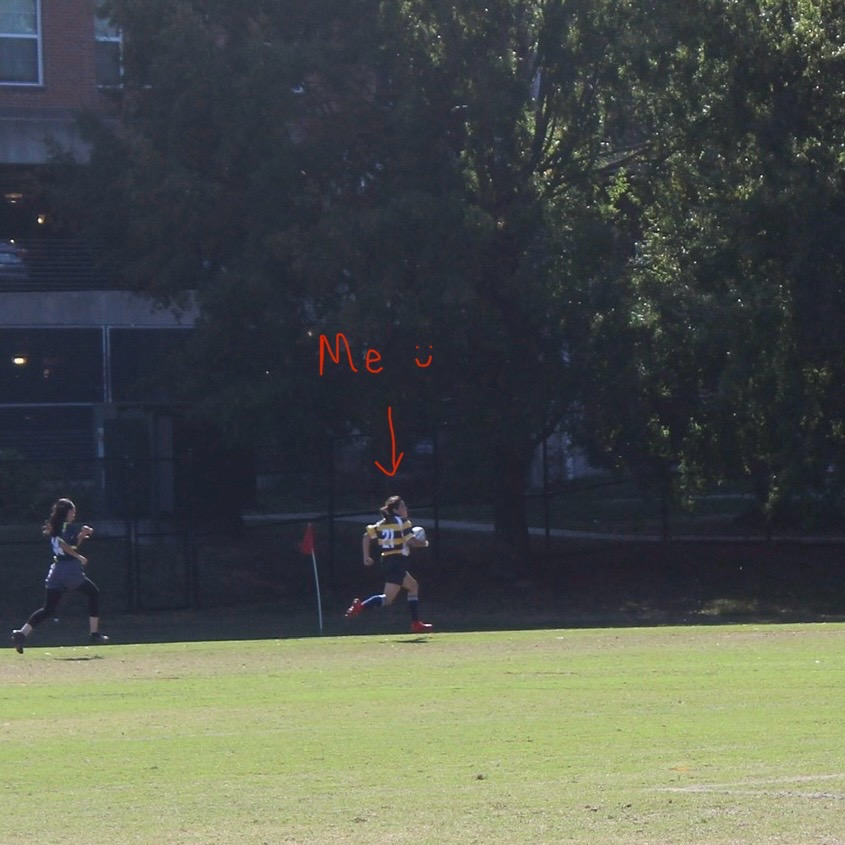
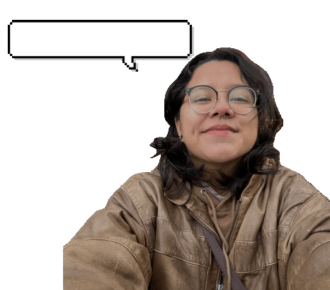

Hello! This world is full of beautiful things that capture my attention and on this page you will find some information about me:
What am I up to?
Currently, I am finishing up my Computer Science Degree at the University of North Carolina at Greensboro, where I have obtained a great portion of my programming knowledge.
During my enrollment, I have been working at 6-TECH, the technology department the university. Here I have gained experience in systems analysis, hardware management and worked with the cloud-computing service SERVICENOW platform.
Beep Boop
I love computers. On my free time I try to spend as much of it as possible learning technology, creating things with it or just writing code.
My main programming languages? Javascript, HTML/CSS, and Java. And I enjoy using Figma for my designing needs, to help me get a better visual of my final goal.
Projects:
- Allerfence: a platform enabling individuals with dietary restrictions to safely order from restaurants, addressing allergen concerns.
- theBasics: an online clothing store, enhancing user experience with a responsive design while integrating third-party APIs for expanded functionality.
Some other things about me:
I can play guitar, but college life hasn't left me with a lot of time for that hobby, but thats okay since I love listening to music and always have something playing.
Top 3 Genres I listen to according to Spotify
- Latin
- Rock
- Metal
A hobby I always try to make time for? Gym and the outdoors.
I used to be on my university's rugby team! Now I mostly do weight lifting and rock climbing.

